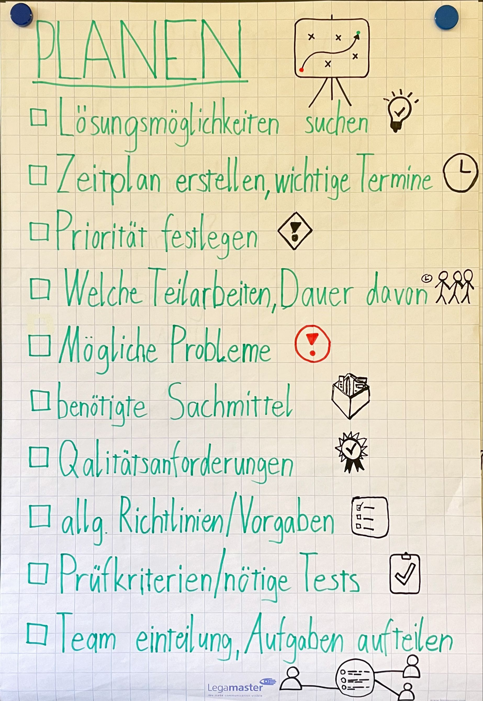
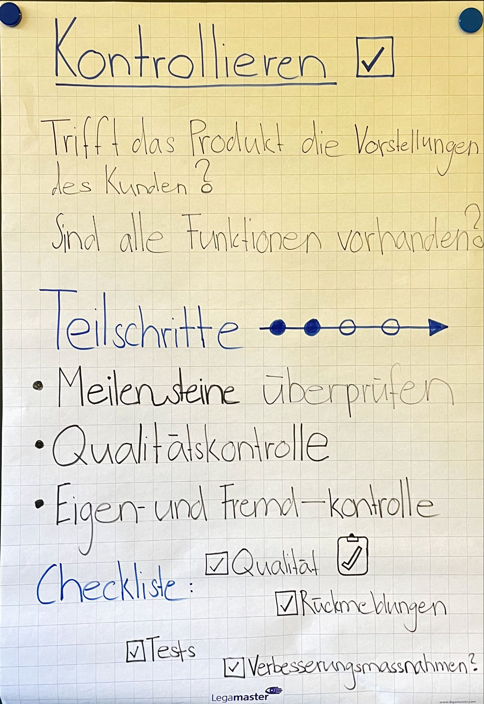

IPERKA im Detail
Arbeitsplatz für neuen Mitarbeiter einrichten
Informieren
- Wann tritt der neue Mitarbeiter die Stelle an?
- Hardwareanforderungen?
- Welche Software benötigt der neue Mitarbeiter?
- Wo befindet sich sein Arbeitsplatz?
Planen
Nach folgendem Plan arbeiten:
Quelle: Zünd Systemtechnik AG
Entscheiden
- Welche Software erhält der Mitarbeiter?
- Welches Gerät erhält der Mitarbeiter?
Realisieren
- Betriebssystem auf dem Computer installieren.
- Benötigte Software installieren.
- Arbeitsplatz einrichten.
- Passwortübergabe.
Kontrollieren
- Wurde die Checkliste eingehalten?
- Ist alles funktionstüchtig?
- Sieht der Arbeitsplatz ordentlich aus (Verkabelung)?
Auswerten
- Wurde der Zeitplan eingehalten?
- Was kann ich fürs nächste Mal besser machen?
Erfahrungen und Erkenntnisse
Dank der guten Planung mit der Checkliste wird kein Schritt vergessen und es erleichtert die Realisierung. Durch die Kontrolle am Ende wird sichergestellt, dass keine Fehler bei der Umsetzung unterlaufen sind.
 Bilder aus Quelle: GBS St. Gallen, OneNote INAI1a
Schwierige Schritte
- Ich finde den Schritt “Planen” herausfordernd, da man aufpassen muss, dass nichts vergessen geht. Wenn ich hier einen wichtigen Punkt vergesse, kann es sein, dass das Projekt in Verzug kommt. Als Beispiel: ich habe den Computer für den neuen Mitarbeiter nicht bestellt.
- Beim “Auswerten” finde ich schwierig, wenn ein Projekt mehrere Monate dauert. Es ist eine grosse Herausforderung am Schluss alles zu reflektieren. Hier muss ich während dem Projekt schon kurze Zwischenauswertungen machen, damit das ganze Projekt ausführlich ausgewerten kann.
Praxisbeispiel
Implementierung einer neuen Softwareanwendung
Informieren
- Welche Mitarbeiter bekommen diese Software?
- Welche Bedürfnisse haben die Anwendergruppen?
Planen
- Zeitlicher Ablauf planen von Kick-off bis GoLive
- Wer ist für welche Schritte der Einführung zuständig?
- Welche Arbeitsschritte müssen bis wann erledigt sein?
Entscheiden
- Kriterien der Software klären
- definitive Variante der Software wählen
- Projektleiter verteilt Arbeiten an die Mitarbeiter
Realisieren
- Mitarbeiter schulen
- Einführung Software nach Plan
Kontrollieren
- Wurde der Vorgehensplan und Zeitplan eingehalten?
- Meilensteine im Auge behalten
Auswerten
- Hat die Einführung der Software geklappt
- Verbesserungen für nächstes Projekt
Reflexion
Dank der guten Planung mit IPERKA behält man auch bei grösseren Projekten wie bei der Implementierung einer neuen Software den Überblick. Alle wichtigen Schritte werden detailliert geplant. Die Zuständigkeiten für die auszuführenden Tätigkeiten werden vergeben. Durch die Kontrolle kann man eingreifen, wenn Probleme auftreten. Am Schluss werden die positiven und negativen Punkte des Projektes ausgewertet. Von diesen Erfahrungen kann die Firma bei der nächsten Software-Umstellung profitieren.